ML & Data Portfolio
I’m a Data Scientist & ML Engineer with a background in Statistics, specializing in building intelligent models and deploying them into production using MLOps practices.
Hi, I'm Niken
My journey into Data Science began in 2020 out of curiosity and
a desire to understand a rapidly changing world. Since then, the path
has been anything but spiral.
I've explored courses, internships, statistics, programming, and
countless projects.
Today, I'm focused on building practical skills in Machine Learning,
Deep Learning, and MLOps through hands-on projects and continuous
learning.
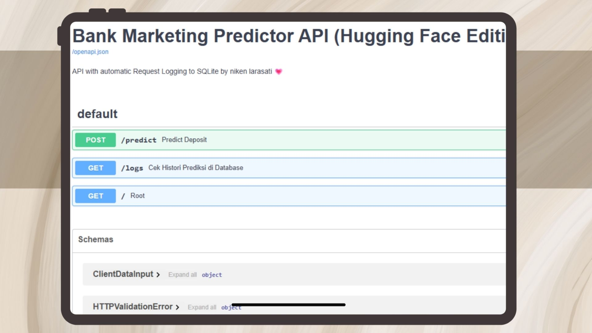
An enterprise-grade MLOps pipeline deploying an optimized LightGBM model to predict bank term deposit conversions. Features a fully automated serving API via FastAPI, robust request logging via SQLite, and a remote registry on Hugging Face Hub. Implements an automated data drift detection system to ensure continuous production reliability
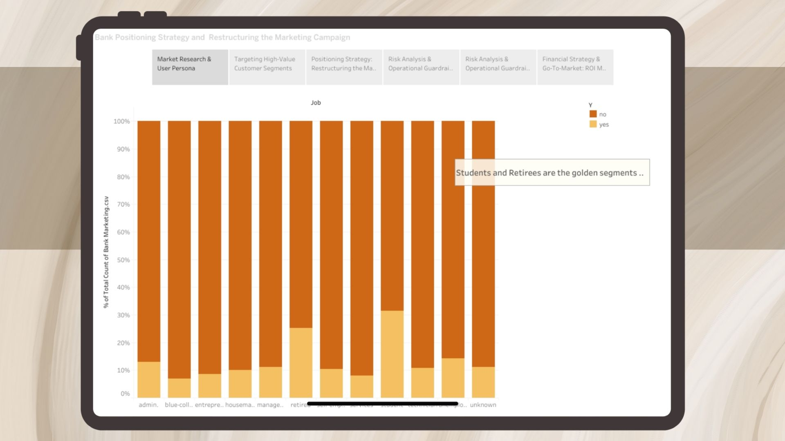
Analyzed customer data to identify key segments and developed a comprehensive insights. The project informed strategic decisions on bank positioning and restructuring marketing campaigns, leading to improved customer targeting and increased conversion rates.
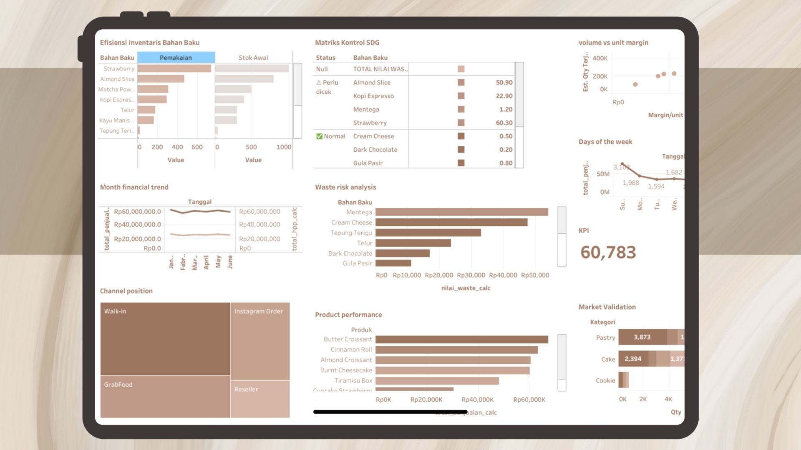
Analyzed market validation, consumer behaviour, financial health, waste risk analysis and growth opportunities for Butterfolk, a local ice cream company. Developed a comprehensive Tableau dashboard to visualize insights and inform strategic decisions for business growth and market positioning.
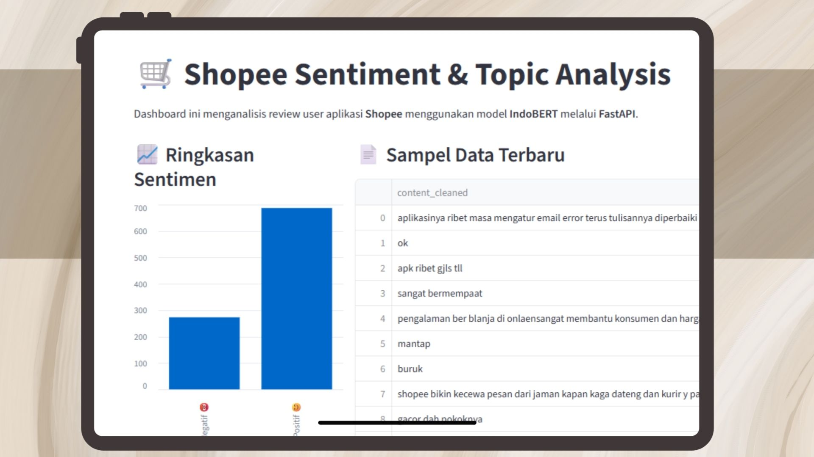
An interactive NLP dashboard built with Streamlit to extract actionable user insights from Shopee customer reviews. Implements sentiment classification and advanced topic modeling to systematically categorize user feedback. Designed to detect customer pain points and provide data-driven recommendations for service optimization.
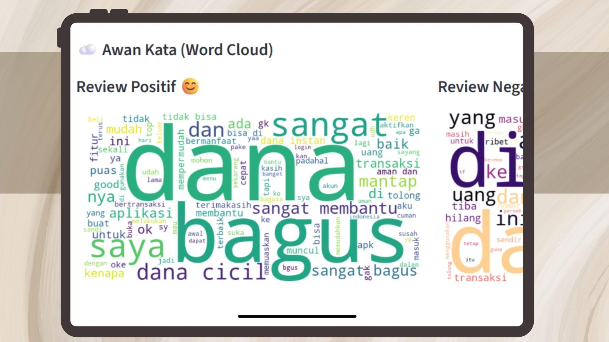
A text-analytics Streamlit application that evaluates customer feedback and satisfaction metrics for the DANA e-wallet ecosystem. Leverages natural language processing pipelines to track shifting consumer sentiments and isolate key operational topics. Enables stakeholders to monitor app performance and user friction points in real time
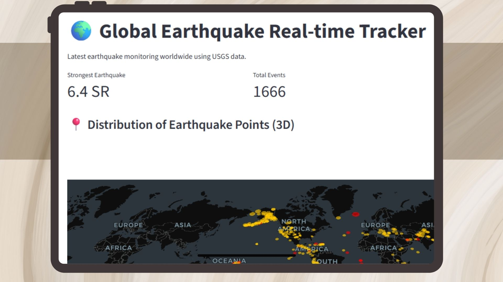
A real-time geospatial monitoring system that ingests and processes live seismic data via USGS APIs. Features an interactive 3D Streamlit dashboard optimized for tracking global earthquake distributions, magnitudes, and high-risk seismic patterns dynamically
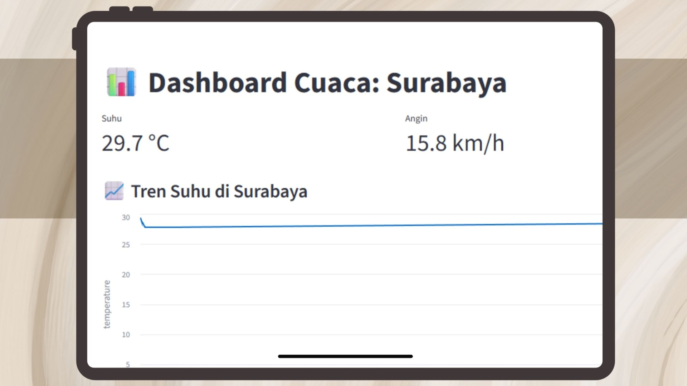
An automated, zero-maintenance ETL pipeline built with Python to fetch real-time weather metrics across major cities. Orchestrated to stream data seamlessly into a Neon PostgreSQL cloud database, ensuring reliable availability for downstream analytics
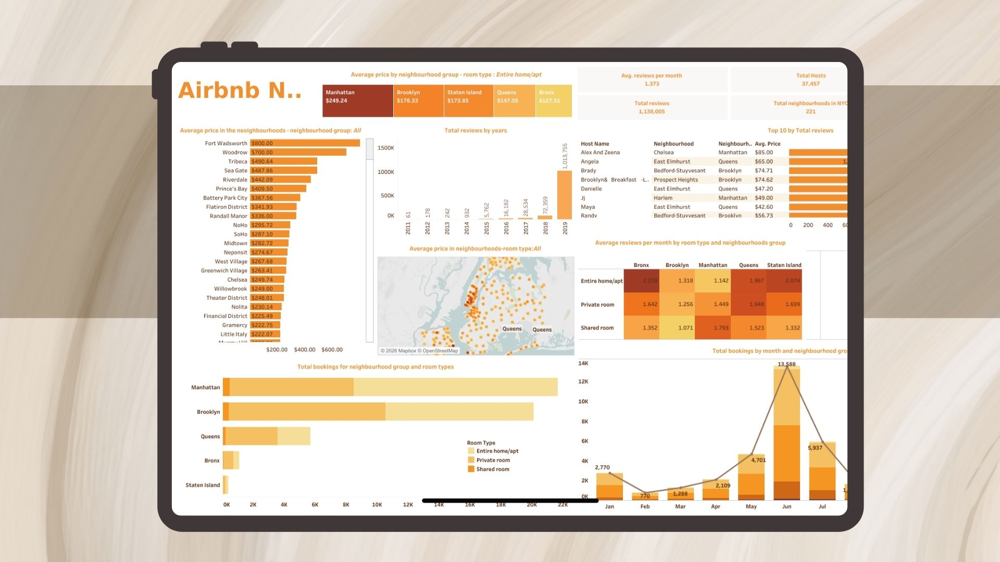
A comprehensive Tableau dashboard analyzing NYC’s Airbnb ecosystem across price distributions, seasonal booking trends, and geographical groups. Features interactive geospatial mapping, room-type heatmaps, and host performance metrics to uncover market supply and demand. Designed to transform complex hospitality data into actionable real estate and commercial pricing strategies.
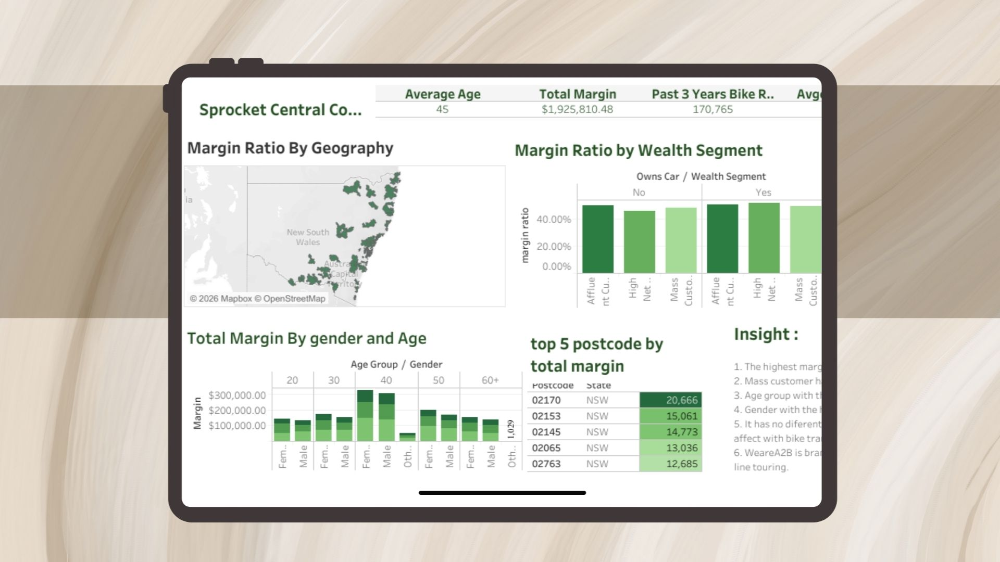
Analyzed customer and transaction data for a bicycle company to identify growth opportunities. Developed a comprehensive Tableau dashboard tracking KPIs like Margin Ratio, Wealth Distribution, and Demographic Trends across 5+ brands.
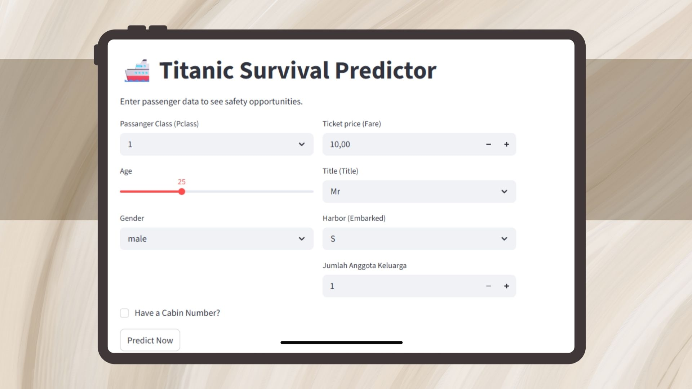
An end-to-end predictive machine learning architecture featuring comprehensive EDA and feature engineering. Implements Gradient Boosting to achieve 80% accuracy, fully deployed into a Streamlit web app for real-time inference.
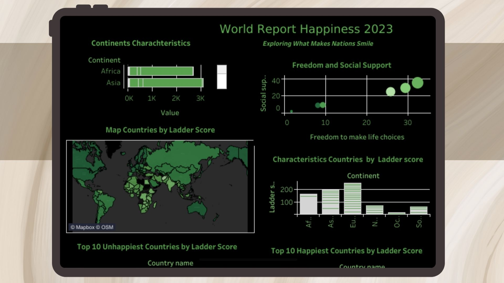
World Happiness Report 2023 Analysis: A comprehensive Tableau dashboard visualizing global happiness trends, key factors influencing well-being, and country comparisons based on the 2023 report.